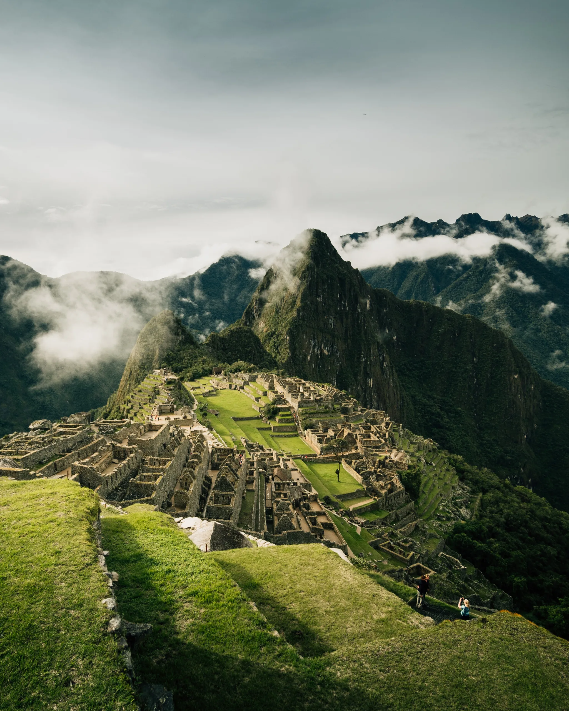
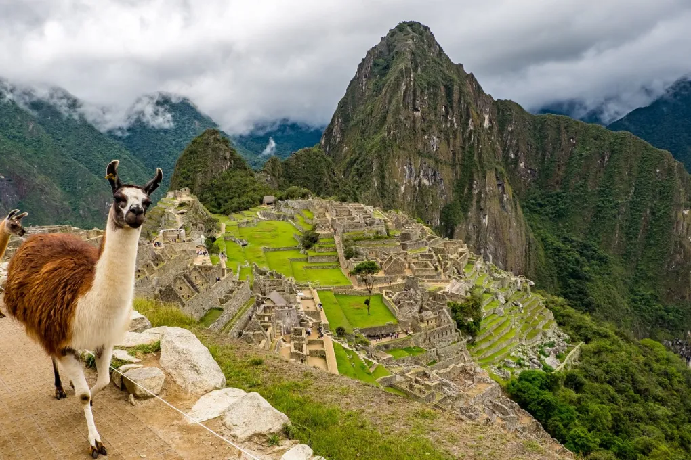
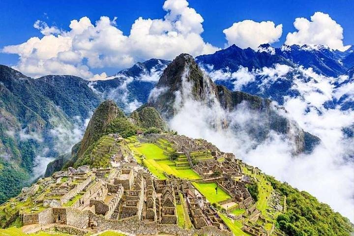
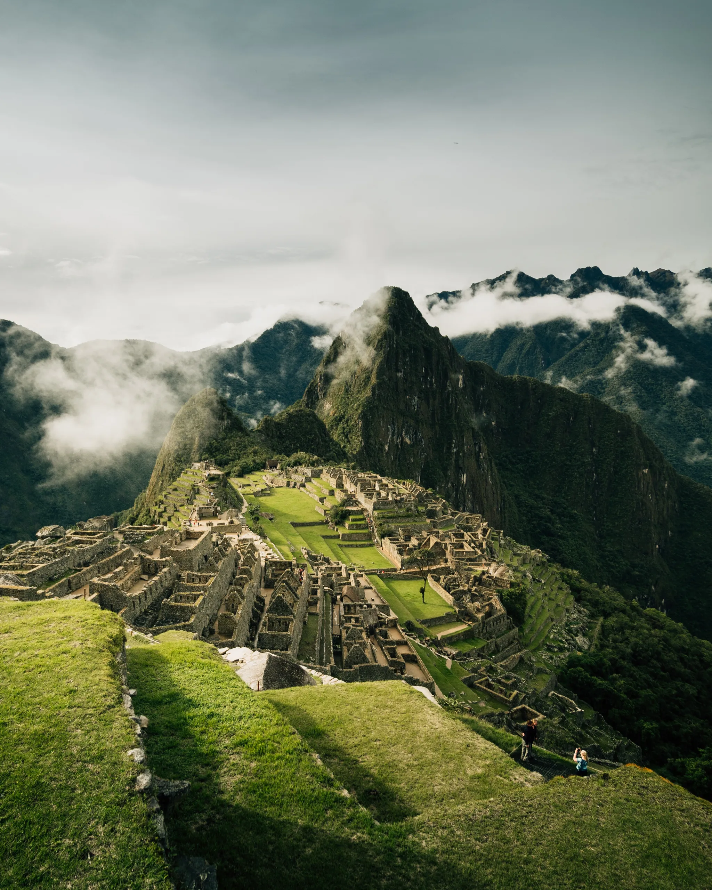
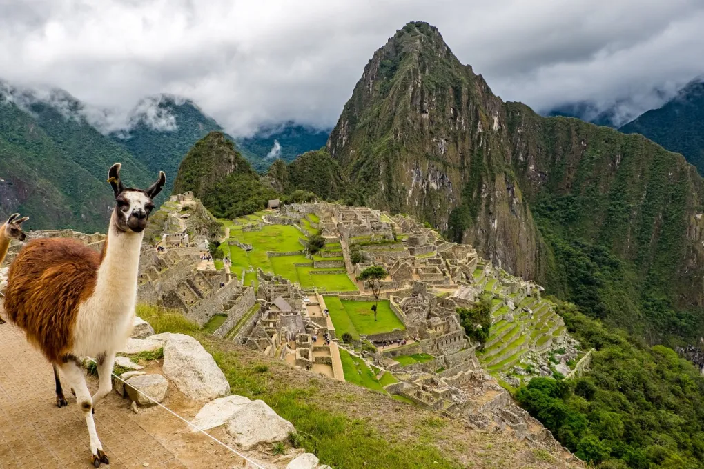
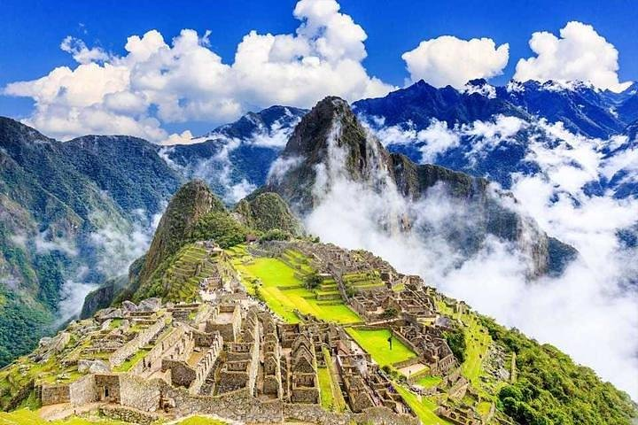

Machu Picchu, site of ancient Inca ruins located about 50 miles (80 km) northwest of Cuzco, Peru,
in the Cordillera de Vilcabamba of the Andes Mountains.
It is perched above the Urubamba River valley in a narrow saddle between two sharp peaks—Machu Picchu (“Old Peak”) and Huayna Picchu (“New Peak”)—at an elevation of 7,710 feet (2,350 metres).
One of the few major pre-Columbian ruins found nearly intact,Machu Picchu was designated a UNESCO World Heritage site in 1983.
 




